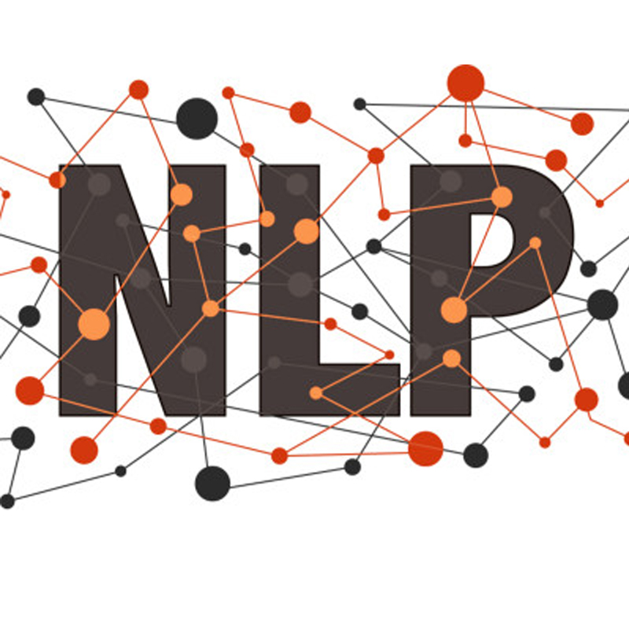

In Collaboration with:

Technology Stack Used:
Machine Learning
The Venter tool uses state of the art NLP models - BERT, Deep Neural Netwroks and Wordnets trained on more than 3 billion words to provide autonomous features for text classification, response categorization, document summarization.

Visualizations
The Venter tool also provides effective and user-friendly interfaces to analyze and better understand these categorizations and features. The visualizations dashboard and the results are tuned to the user's intuition.
Databases
The website allows all the clients to register their emoployees as users. It also has a ubiquitous storage that allows the users to securely store their uploads, analysis, visualizations and results.
How it works

Our Clients